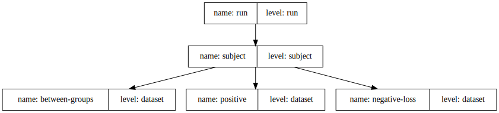

NARPS
NARPS#
%load_ext autoreload
%autoreload 2
import json
from pathlib import Path
from itertools import chain
import numpy as np
import pandas as pd
from nilearn.plotting import plot_design_matrix
import bids
from bids.modeling import BIDSStatsModelsGraph
from bids.layout import BIDSLayout
def api(obj):
return {attr: getattr(obj, attr) for attr in dir(obj) if not attr[0] == '_'}
layout = BIDSLayout('./ds001734/', database_path="./ds001734.db")
json_file = './model-narps_smdl.json'
spec = json.loads(Path(json_file).read_text())
spec
{'Name': 'NARPS',
'Description': 'NARPS Analysis model',
'BIDSModelVersion': '1.0.0',
'Input': {'task': 'MGT'},
'Nodes': [{'Level': 'Run',
'Name': 'run',
'GroupBy': ['run', 'subject'],
'Transformations': {'Transformer': 'pybids-transforms-v1',
'Instructions': [{'Name': 'Threshold',
'Input': ['gain'],
'Binarize': True,
'Output': ['trials']},
{'Name': 'Scale',
'Input': ['gain', 'loss', 'RT'],
'Demean': True,
'Rescale': False,
'Output': ['gain', 'loss', 'demeaned_RT']},
{'Name': 'Convolve',
'Model': 'spm',
'Input': ['trials', 'gain', 'loss', 'demeaned_RT']}]},
'Model': {'X': ['trials', 'gain', 'loss', 'demeaned_RT', 1], 'Type': 'glm'},
'DummyContrasts': {'Conditions': ['trials', 'gain', 'loss'], 'Test': 't'}},
{'Level': 'Subject',
'Name': 'subject',
'GroupBy': ['subject', 'contrast'],
'Model': {'X': [1], 'Type': 'meta'},
'DummyContrasts': {'Test': 't'}},
{'Level': 'Dataset',
'Name': 'between-groups',
'GroupBy': ['contrast'],
'Model': {'X': [1, 'group'], 'Formula': '0 + C(group)'},
'Contrasts': [{'Name': 'range_vs_indiference',
'ConditionList': ['C(group)[T.equalRange]',
'C(group)[T.equalIndifference]'],
'Weights': [1, -1],
'Test': 't'}]},
{'Level': 'Dataset',
'Name': 'positive',
'GroupBy': ['contrast', 'group'],
'Model': {'X': [1]},
'DummyContrasts': {'Test': 't'}},
{'Level': 'Dataset',
'Name': 'negative-loss',
'GroupBy': ['contrast', 'group'],
'Model': {'X': [1]},
'Contrasts': [{'Name': 'negative',
'ConditionList': [1],
'Weights': [-1],
'Test': 't'}]}],
'Edges': [{'Source': 'run', 'Destination': 'subject'},
{'Source': 'subject', 'Destination': 'positive'},
{'Source': 'subject',
'Destination': 'negative-loss',
'Filter': {'contrast': ['loss']}},
{'Source': 'subject',
'Destination': 'between-groups',
'Filter': {'contrast': ['loss']}}]}
spec['Input'] = {
'task': 'MGT',
'subject': ['001', '002', '003']
}
graph = BIDSStatsModelsGraph(layout, spec)
graph.write_graph(format='svg')

root_node = graph.root_node
try:
graph.load_collections()
except ValueError:
graph.load_collections(scan_length=453) # TR = 1, nvols = 453
specs = root_node.run(group_by=root_node.group_by, force_dense=False)
api(specs[0])
{'X': trials gain loss demeaned_RT intercept
0 0.000002 -0.000020 -0.000011 7.939675e-07 1.0
1 -0.000005 0.000056 0.000032 -2.276861e-06 1.0
2 0.000014 -0.000159 -0.000091 6.446336e-06 1.0
3 -0.000037 0.000408 0.000235 -1.654103e-05 1.0
4 0.000073 -0.000812 -0.000468 3.296583e-05 1.0
.. ... ... ... ... ...
448 0.729063 8.015666 5.652929 -2.061146e-01 1.0
449 0.576339 7.628444 4.549625 -1.434993e-01 1.0
450 0.397427 6.338474 3.218710 -8.201623e-02 1.0
451 0.237071 4.844265 2.008481 -3.181046e-02 1.0
452 0.097324 3.315304 0.939883 8.506043e-03 1.0
[453 rows x 5 columns],
'contrasts': [ContrastInfo(name='gain', conditions=['gain'], weights=[1], test='t', entities={'run': 1, 'subject': '001', 'contrast': 'gain'}),
ContrastInfo(name='trials', conditions=['trials'], weights=[1], test='t', entities={'run': 1, 'subject': '001', 'contrast': 'trials'}),
ContrastInfo(name='loss', conditions=['loss'], weights=[1], test='t', entities={'run': 1, 'subject': '001', 'contrast': 'loss'}),
ContrastInfo(name='intercept', conditions=['intercept'], weights=[1], test='t', entities={'run': 1, 'subject': '001', 'contrast': 'intercept'}),
ContrastInfo(name='demeaned_RT', conditions=['demeaned_RT'], weights=[1], test='t', entities={'run': 1, 'subject': '001', 'contrast': 'demeaned_RT'})],
'data': trials gain loss demeaned_RT intercept
0 0.000002 -0.000020 -0.000011 7.939675e-07 1
1 -0.000005 0.000056 0.000032 -2.276861e-06 1
2 0.000014 -0.000159 -0.000091 6.446336e-06 1
3 -0.000037 0.000408 0.000235 -1.654103e-05 1
4 0.000073 -0.000812 -0.000468 3.296583e-05 1
.. ... ... ... ... ...
448 0.729063 8.015666 5.652929 -2.061146e-01 1
449 0.576339 7.628444 4.549625 -1.434993e-01 1
450 0.397427 6.338474 3.218710 -8.201623e-02 1
451 0.237071 4.844265 2.008481 -3.181046e-02 1
452 0.097324 3.315304 0.939883 8.506043e-03 1
[453 rows x 5 columns],
'entities': {'run': 1, 'subject': '001'},
'force_dense': False,
'invalid_contrasts': 'drop',
'metadata': BandwidthPerPixelPhaseEncode \
0 34.305
1 34.305
2 34.305
3 34.305
4 34.305
.. ...
448 34.305
449 34.305
450 34.305
451 34.305
452 34.305
CogAtlasID EchoTime \
0 http://www.cognitiveatlas.org/id/trm_4cacee4a1... 0.03
1 http://www.cognitiveatlas.org/id/trm_4cacee4a1... 0.03
2 http://www.cognitiveatlas.org/id/trm_4cacee4a1... 0.03
3 http://www.cognitiveatlas.org/id/trm_4cacee4a1... 0.03
4 http://www.cognitiveatlas.org/id/trm_4cacee4a1... 0.03
.. ... ...
448 http://www.cognitiveatlas.org/id/trm_4cacee4a1... 0.03
449 http://www.cognitiveatlas.org/id/trm_4cacee4a1... 0.03
450 http://www.cognitiveatlas.org/id/trm_4cacee4a1... 0.03
451 http://www.cognitiveatlas.org/id/trm_4cacee4a1... 0.03
452 http://www.cognitiveatlas.org/id/trm_4cacee4a1... 0.03
EffectiveEchoSpacing FlipAngle MagneticFieldStrength Manufacturer \
0 0.000275 68 3 SIEMENS
1 0.000275 68 3 SIEMENS
2 0.000275 68 3 SIEMENS
3 0.000275 68 3 SIEMENS
4 0.000275 68 3 SIEMENS
.. ... ... ... ...
448 0.000275 68 3 SIEMENS
449 0.000275 68 3 SIEMENS
450 0.000275 68 3 SIEMENS
451 0.000275 68 3 SIEMENS
452 0.000275 68 3 SIEMENS
ManufacturersModelName MultibandAccelerationFactor \
0 Prisma 4
1 Prisma 4
2 Prisma 4
3 Prisma 4
4 Prisma 4
.. ... ...
448 Prisma 4
449 Prisma 4
450 Prisma 4
451 Prisma 4
452 Prisma 4
PhaseEncodingDirection ... TaskDescription TaskName datatype \
0 j- ... Mixed gambles task MGT func
1 j- ... Mixed gambles task MGT func
2 j- ... Mixed gambles task MGT func
3 j- ... Mixed gambles task MGT func
4 j- ... Mixed gambles task MGT func
.. ... ... ... ... ...
448 j- ... Mixed gambles task MGT func
449 j- ... Mixed gambles task MGT func
450 j- ... Mixed gambles task MGT func
451 j- ... Mixed gambles task MGT func
452 j- ... Mixed gambles task MGT func
duration extension onset run subject suffix task
0 1.0 .nii.gz 0.0 1 001 bold MGT
1 1.0 .nii.gz 1.0 1 001 bold MGT
2 1.0 .nii.gz 2.0 1 001 bold MGT
3 1.0 .nii.gz 3.0 1 001 bold MGT
4 1.0 .nii.gz 4.0 1 001 bold MGT
.. ... ... ... .. ... ... ...
448 1.0 .nii.gz 448.0 1 001 bold MGT
449 1.0 .nii.gz 449.0 1 001 bold MGT
450 1.0 .nii.gz 450.0 1 001 bold MGT
451 1.0 .nii.gz 451.0 1 001 bold MGT
452 1.0 .nii.gz 452.0 1 001 bold MGT
[453 rows x 22 columns],
'model_spec': <bids.modeling.model_spec.GLMMSpec at 0x7fa6f5091b80>,
'node': <BIDSStatsModelsNode[run] run>,
'sampling_rate': 'TR'}
specs[0]
<bids.modeling.statsmodels.BIDSStatsModelsNodeOutput at 0x7fa6f6d55280>
plot_design_matrix(specs[0].X)
<AxesSubplot: label='conditions', ylabel='scan number'>
specs[0].entities
{'run': 1, 'subject': '001'}
specs[0].metadata
| BandwidthPerPixelPhaseEncode | CogAtlasID | EchoTime | EffectiveEchoSpacing | FlipAngle | MagneticFieldStrength | Manufacturer | ManufacturersModelName | MultibandAccelerationFactor | PhaseEncodingDirection | ... | TaskDescription | TaskName | datatype | duration | extension | onset | run | subject | suffix | task | |
|---|---|---|---|---|---|---|---|---|---|---|---|---|---|---|---|---|---|---|---|---|---|
| 0 | 34.305 | http://www.cognitiveatlas.org/id/trm_4cacee4a1... | 0.03 | 0.000275 | 68 | 3 | SIEMENS | Prisma | 4 | j- | ... | Mixed gambles task | MGT | func | 1.0 | .nii.gz | 0.0 | 1 | 001 | bold | MGT |
| 1 | 34.305 | http://www.cognitiveatlas.org/id/trm_4cacee4a1... | 0.03 | 0.000275 | 68 | 3 | SIEMENS | Prisma | 4 | j- | ... | Mixed gambles task | MGT | func | 1.0 | .nii.gz | 1.0 | 1 | 001 | bold | MGT |
| 2 | 34.305 | http://www.cognitiveatlas.org/id/trm_4cacee4a1... | 0.03 | 0.000275 | 68 | 3 | SIEMENS | Prisma | 4 | j- | ... | Mixed gambles task | MGT | func | 1.0 | .nii.gz | 2.0 | 1 | 001 | bold | MGT |
| 3 | 34.305 | http://www.cognitiveatlas.org/id/trm_4cacee4a1... | 0.03 | 0.000275 | 68 | 3 | SIEMENS | Prisma | 4 | j- | ... | Mixed gambles task | MGT | func | 1.0 | .nii.gz | 3.0 | 1 | 001 | bold | MGT |
| 4 | 34.305 | http://www.cognitiveatlas.org/id/trm_4cacee4a1... | 0.03 | 0.000275 | 68 | 3 | SIEMENS | Prisma | 4 | j- | ... | Mixed gambles task | MGT | func | 1.0 | .nii.gz | 4.0 | 1 | 001 | bold | MGT |
| ... | ... | ... | ... | ... | ... | ... | ... | ... | ... | ... | ... | ... | ... | ... | ... | ... | ... | ... | ... | ... | ... |
| 448 | 34.305 | http://www.cognitiveatlas.org/id/trm_4cacee4a1... | 0.03 | 0.000275 | 68 | 3 | SIEMENS | Prisma | 4 | j- | ... | Mixed gambles task | MGT | func | 1.0 | .nii.gz | 448.0 | 1 | 001 | bold | MGT |
| 449 | 34.305 | http://www.cognitiveatlas.org/id/trm_4cacee4a1... | 0.03 | 0.000275 | 68 | 3 | SIEMENS | Prisma | 4 | j- | ... | Mixed gambles task | MGT | func | 1.0 | .nii.gz | 449.0 | 1 | 001 | bold | MGT |
| 450 | 34.305 | http://www.cognitiveatlas.org/id/trm_4cacee4a1... | 0.03 | 0.000275 | 68 | 3 | SIEMENS | Prisma | 4 | j- | ... | Mixed gambles task | MGT | func | 1.0 | .nii.gz | 450.0 | 1 | 001 | bold | MGT |
| 451 | 34.305 | http://www.cognitiveatlas.org/id/trm_4cacee4a1... | 0.03 | 0.000275 | 68 | 3 | SIEMENS | Prisma | 4 | j- | ... | Mixed gambles task | MGT | func | 1.0 | .nii.gz | 451.0 | 1 | 001 | bold | MGT |
| 452 | 34.305 | http://www.cognitiveatlas.org/id/trm_4cacee4a1... | 0.03 | 0.000275 | 68 | 3 | SIEMENS | Prisma | 4 | j- | ... | Mixed gambles task | MGT | func | 1.0 | .nii.gz | 452.0 | 1 | 001 | bold | MGT |
453 rows × 22 columns
bold = layout.get(**specs[0].entities, suffix='bold', extension='.nii.gz')[0]
# import nilearn.glm
# l1m = nilearn.glm.first_level.FirstLevelModel()
# l1m.fit(bold.get_image(), design_matrices=specs[0].X)
next_node = root_node.children[0].destination
next_node.group_by
['subject', 'contrast']
root_node.children[0].filter
{}
contrasts = list(chain(*[s.contrasts for s in specs]))
sub_specs = next_node.run(contrasts, group_by=next_node.group_by)
api(sub_specs[3])
{'X': intercept
0 1
1 1
2 1
3 1,
'contrasts': [ContrastInfo(name='intercept', conditions=['intercept'], weights=[1], test='t', entities={'contrast': 'intercept', 'subject': '001'})],
'data': intercept
0 1
1 1
2 1
3 1,
'entities': {'contrast': 'intercept', 'subject': '001'},
'force_dense': True,
'invalid_contrasts': 'drop',
'metadata': contrast run subject
0 intercept 1 001
1 intercept 2 001
2 intercept 3 001
3 intercept 4 001,
'model_spec': <bids.modeling.model_spec.GLMMSpec at 0x7fa6f6d14cd0>,
'node': <BIDSStatsModelsNode[subject] subject>,
'sampling_rate': 'TR'}
ds1_node = next_node.children[1].destination
api(ds1_node)
{'add_child': <bound method BIDSStatsModelsNode.add_child of <BIDSStatsModelsNode[dataset] negative-loss>>,
'add_collections': <bound method BIDSStatsModelsNode.add_collections of <BIDSStatsModelsNode[dataset] negative-loss>>,
'add_parent': <bound method BIDSStatsModelsNode.add_parent of <BIDSStatsModelsNode[dataset] negative-loss>>,
'children': [],
'contrasts': [{'name': 'negative',
'condition_list': [1],
'weights': [-1],
'test': 't'}],
'dummy_contrasts': False,
'get_collections': <bound method BIDSStatsModelsNode.get_collections of <BIDSStatsModelsNode[dataset] negative-loss>>,
'group_by': ['contrast', 'group'],
'level': 'dataset',
'model': {'x': [1]},
'name': 'negative-loss',
'parents': [BIDSStatsModelsEdge(source=<BIDSStatsModelsNode[subject] subject>, destination=<BIDSStatsModelsNode[dataset] negative-loss>, filter={'contrast': ['loss']})],
'run': <bound method BIDSStatsModelsNode.run of <BIDSStatsModelsNode[dataset] negative-loss>>,
'transformations': {'transformer': 'pybids-transforms-v1',
'instructions': []}}
next_node.children[1].filter
{'contrast': ['loss']}
sub_contrasts = list(chain(*[s.contrasts for s in sub_specs]))
ds1_specs = ds1_node.run(sub_contrasts, group_by=ds1_node.group_by, **next_node.children[1].filter)
%debug
ERROR:root:No traceback has been produced, nothing to debug.
ds1_specs[0].X
| intercept | |
|---|---|
| 0 | 1 |
| 1 | 1 |
pd.concat((ds1_specs[0].data, ds1_specs[0].metadata), axis=1)
| intercept | contrast | subject | |
|---|---|---|---|
| 0 | 1 | loss | 001 |
| 1 | 1 | loss | 003 |
ds1_specs[0].contrasts
[ContrastInfo(name='loss_negative', conditions=['intercept'], weights=[-1], test='t', entities={'contrast': 'loss_negative', 'group': 'equalIndifference'})]
ds0_node = next_node.children[0].destination
ds0_specs = ds0_node.run(sub_contrasts, group_by=ds0_node.group_by)
ds0_specs
[<bids.modeling.statsmodels.BIDSStatsModelsNodeOutput at 0x7fa7343e4820>,
<bids.modeling.statsmodels.BIDSStatsModelsNodeOutput at 0x7fa6f6ceff70>,
<bids.modeling.statsmodels.BIDSStatsModelsNodeOutput at 0x7fa6f6ce4c40>,
<bids.modeling.statsmodels.BIDSStatsModelsNodeOutput at 0x7fa6f6ce4490>,
<bids.modeling.statsmodels.BIDSStatsModelsNodeOutput at 0x7fa6f6cb8550>,
<bids.modeling.statsmodels.BIDSStatsModelsNodeOutput at 0x7fa6f6cb82e0>,
<bids.modeling.statsmodels.BIDSStatsModelsNodeOutput at 0x7fa6f6cb8250>,
<bids.modeling.statsmodels.BIDSStatsModelsNodeOutput at 0x7fa6f6c4b1f0>,
<bids.modeling.statsmodels.BIDSStatsModelsNodeOutput at 0x7fa6f6c4b790>,
<bids.modeling.statsmodels.BIDSStatsModelsNodeOutput at 0x7fa6f6c4b5e0>]
ds0_specs[1].X
| intercept | |
|---|---|
| 0 | 1 |
| 1 | 1 |
pd.concat((ds0_specs[0].data, ds0_specs[0].metadata), axis=1)
| intercept | contrast | subject | |
|---|---|---|---|
| 0 | 1 | gain | 001 |
| 1 | 1 | gain | 003 |
ds2_node = next_node.children[2].destination
filters = next_node.children[2].filter or {}
print(filters)
ds2_specs = ds2_node.run(sub_contrasts, group_by=ds2_node.group_by, **filters)
print(ds2_specs)
{'contrast': ['loss']}
[<bids.modeling.statsmodels.BIDSStatsModelsNodeOutput object at 0x7fa6f6ce49a0>]
api(ds2_specs[0])
{'X': C(group)[T.equalIndifference] C(group)[T.equalRange]
0 1 0
1 0 1
2 1 0,
'contrasts': [ContrastInfo(name='loss_range_vs_indiference', conditions=['C(group)[T.equalRange]', 'C(group)[T.equalIndifference]'], weights=[1, -1], test='t', entities={'contrast': 'loss_range_vs_indiference'})],
'data': intercept group
0 1 equalIndifference
1 1 equalRange
2 1 equalIndifference,
'entities': {'contrast': 'loss'},
'force_dense': True,
'invalid_contrasts': 'drop',
'metadata': contrast subject suffix
0 loss 001 participants
1 loss 002 participants
2 loss 003 participants,
'model_spec': <bids.modeling.model_spec.GLMMSpec at 0x7fa6f6ce4a90>,
'node': <BIDSStatsModelsNode[dataset] between-groups>,
'sampling_rate': 'TR'}
ds2_specs[0].X
| C(group)[T.equalIndifference] | C(group)[T.equalRange] | |
|---|---|---|
| 0 | 1 | 0 |
| 1 | 0 | 1 |
| 2 | 1 | 0 |
pd.concat((ds2_specs[0].data, ds2_specs[0].metadata), axis=1)
| intercept | group | contrast | subject | suffix | |
|---|---|---|---|---|---|
| 0 | 1 | equalIndifference | loss | 001 | participants |
| 1 | 1 | equalRange | loss | 002 | participants |
| 2 | 1 | equalIndifference | loss | 003 | participants |
api(ds1_node)
{'add_child': <bound method BIDSStatsModelsNode.add_child of <BIDSStatsModelsNode[dataset] negative-loss>>,
'add_collections': <bound method BIDSStatsModelsNode.add_collections of <BIDSStatsModelsNode[dataset] negative-loss>>,
'add_parent': <bound method BIDSStatsModelsNode.add_parent of <BIDSStatsModelsNode[dataset] negative-loss>>,
'children': [],
'contrasts': [{'name': 'negative',
'condition_list': [1],
'weights': [-1],
'test': 't'}],
'dummy_contrasts': False,
'get_collections': <bound method BIDSStatsModelsNode.get_collections of <BIDSStatsModelsNode[dataset] negative-loss>>,
'group_by': ['contrast', 'group'],
'level': 'dataset',
'model': {'x': [1]},
'name': 'negative-loss',
'parents': [BIDSStatsModelsEdge(source=<BIDSStatsModelsNode[subject] subject>, destination=<BIDSStatsModelsNode[dataset] negative-loss>, filter={'contrast': ['loss']})],
'run': <bound method BIDSStatsModelsNode.run of <BIDSStatsModelsNode[dataset] negative-loss>>,
'transformations': {'transformer': 'pybids-transforms-v1',
'instructions': []}}
graph.nodes
OrderedDict([('run', <BIDSStatsModelsNode[run] run>),
('subject', <BIDSStatsModelsNode[subject] subject>),
('between-groups', <BIDSStatsModelsNode[dataset] between-groups>),
('positive', <BIDSStatsModelsNode[dataset] positive>),
('negative-loss', <BIDSStatsModelsNode[dataset] negative-loss>)])
graph.root_node.children
[BIDSStatsModelsEdge(source=<BIDSStatsModelsNode[run] run>, destination=<BIDSStatsModelsNode[subject] subject>, filter={})]
graph.root_node.children[0].destination.children
[BIDSStatsModelsEdge(source=<BIDSStatsModelsNode[subject] subject>, destination=<BIDSStatsModelsNode[dataset] positive>, filter={}),
BIDSStatsModelsEdge(source=<BIDSStatsModelsNode[subject] subject>, destination=<BIDSStatsModelsNode[dataset] negative-loss>, filter={'contrast': ['loss']}),
BIDSStatsModelsEdge(source=<BIDSStatsModelsNode[subject] subject>, destination=<BIDSStatsModelsNode[dataset] between-groups>, filter={'contrast': ['loss']})]
graph.root_node.children[0].destination.children[2].destination.name
'between-groups'